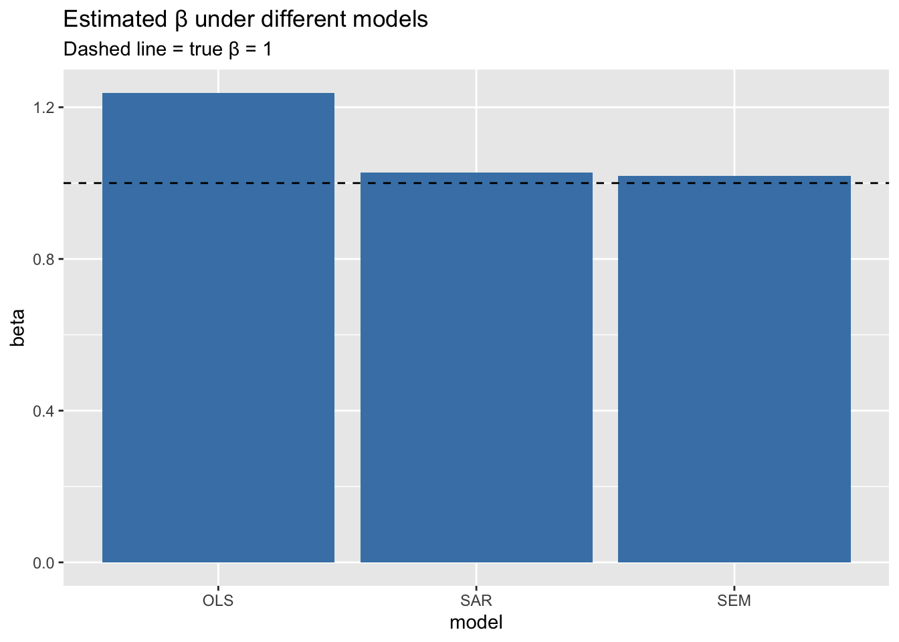

To enable caching of data, set `options(tigris_use_cache = TRUE)`
in your R script or .Rprofile.
Code
library(sf)
Linking to GEOS 3.13.0, GDAL 3.8.5, PROJ 9.5.1; sf_use_s2() is TRUE
Code
library(spdep)
Loading required package: spData
Code
library(spatialreg)
Loading required package: Matrix
Attaching package: 'spatialreg'
The following objects are masked from 'package:spdep':
get.ClusterOption, get.coresOption, get.mcOption,
get.VerboseOption, get.ZeroPolicyOption, set.ClusterOption,
set.coresOption, set.mcOption, set.VerboseOption,
set.ZeroPolicyOption
Code
library(dplyr)
Attaching package: 'dplyr'
The following objects are masked from 'package:stats':
filter, lag
The following objects are masked from 'package:base':
intersect, setdiff, setequal, union
Code
library(ggplot2)options(tigris_use_cache =TRUE)
Code
cnty <- tigris::counties(state ="ID", year =2020, class ="sf") %>%st_transform(5070) # Albers projection for distance calculations
# Simulate SAR-Lag: y = (I - rho W)^(-1)(beta*X + eps)sim_sar <-function(X, W, rho, sigma=1){ I <-diag(length(X)) eps <-rnorm(length(X), 0, sigma)as.numeric(solve(I - rho * W) %*% (X + eps))}# Simulate SEM (CAR-like): y = X + u, where u = (I - lambda W)^(-1) epssim_sem <-function(X, W, lambda, sigma=1){ I <-diag(length(X)) eps <-rnorm(length(X), 0, sigma) u <-solve(I - lambda * W) %*% epsas.numeric(X + u)}
Code
# Choose adjacency:lw <- lw_contig # contiguity (swap to lw_dist for distance)Wmat <-listw2mat(lw)n <-length(lw$neighbours)# CovariateX <-rnorm(n)beta <-1rho <-0.6# spatial lag strengthlam <-0.6# spatial error strengthy <-sim_sem(X, beta, lambda = lam, W = Wmat)data <- cnty %>%mutate(y = y, X = X)
Code
fit_lm <-lm(y ~ X, data = data)fit_sar <-lagsarlm(y ~ X, data = data, listw = lw)fit_sem <-errorsarlm(y ~ X, data = data, listw = lw)summary(fit_lm)
Call:
lm(formula = y ~ X, data = data)
Residuals:
Min 1Q Median 3Q Max
-2.72894 -0.57174 0.07531 0.57193 2.81319
Coefficients:
Estimate Std. Error t value Pr(>|t|)
(Intercept) 0.05183 0.16747 0.309 0.759
X 1.23815 0.17806 6.954 1.69e-08 ***
---
Signif. codes: 0 '***' 0.001 '**' 0.01 '*' 0.05 '.' 0.1 ' ' 1
Residual standard error: 1.111 on 42 degrees of freedom
Multiple R-squared: 0.5351, Adjusted R-squared: 0.5241
F-statistic: 48.35 on 1 and 42 DF, p-value: 1.694e-08
Code
summary(fit_sar)
Call:lagsarlm(formula = y ~ X, data = data, listw = lw)
Residuals:
Min 1Q Median 3Q Max
-2.07840 -0.57578 0.17613 0.50159 2.02895
Type: lag
Coefficients: (asymptotic standard errors)
Estimate Std. Error z value Pr(>|z|)
(Intercept) 0.045598 0.141723 0.3217 0.7476
X 1.027034 0.156333 6.5695 5.048e-11
Rho: 0.46585, LR test value: 10.143, p-value: 0.0014485
Asymptotic standard error: 0.13134
z-value: 3.5468, p-value: 0.00038991
Wald statistic: 12.58, p-value: 0.00038991
Log likelihood: -60.96573 for lag model
ML residual variance (sigma squared): 0.88344, (sigma: 0.93992)
Number of observations: 44
Number of parameters estimated: 4
AIC: 129.93, (AIC for lm: 138.07)
LM test for residual autocorrelation
test value: 1.7164, p-value: 0.19015
Code
summary(fit_sem)
Call:errorsarlm(formula = y ~ X, data = data, listw = lw)
Residuals:
Min 1Q Median 3Q Max
-2.70218 -0.49116 0.14118 0.65169 2.33306
Type: error
Coefficients: (asymptotic standard errors)
Estimate Std. Error z value Pr(>|z|)
(Intercept) 0.037287 0.274559 0.1358 0.892
X 1.019187 0.167417 6.0877 1.145e-09
Lambda: 0.45243, LR test value: 5.1191, p-value: 0.023664
Asymptotic standard error: 0.16398
z-value: 2.759, p-value: 0.0057981
Wald statistic: 7.612, p-value: 0.0057981
Log likelihood: -63.47767 for error model
ML residual variance (sigma squared): 0.9939, (sigma: 0.99694)
Number of observations: 44
Number of parameters estimated: 4
AIC: 134.96, (AIC for lm: 138.07)
Code
coef_tbl <-tibble(model =c("OLS","SAR","SEM"),beta =c(coef(fit_lm)["X"], coef(fit_sar)["X"], coef(fit_sem)["X"]))ggplot(coef_tbl, aes(model, beta)) +geom_col(fill ="steelblue") +geom_hline(yintercept =1, linetype="dashed") +labs(title ="Estimated β under different models",subtitle ="Dashed line = true β = 1")

Code
# Storageresults <-data.frame(param=numeric(), beta_hat=numeric(), model=character())# LM on SAR-generated datafor(r in rho_vals){ y <-gen_SAR(r) fit <-lm(y ~ a) results <-rbind(results,data.frame(param=r, beta_hat=coef(fit)[2], model="LM_on_SAR"))}# LM on SEM-generated datafor(l in lam_vals){ y <-gen_SEM(l) fit <-lm(y ~ a) results <-rbind(results,data.frame(param=l, beta_hat=coef(fit)[2], model="LM_on_SEM"))}# Print resultsprint(results)
Source Code
---title: "Models for Spatial Autocorrelation"---```{r}library(tigris)library(sf)library(spdep)library(spatialreg)library(dplyr)library(ggplot2)options(tigris_use_cache =TRUE)``````{r}cnty <- tigris::counties(state ="ID", year =2020, class ="sf") %>%st_transform(5070) # Albers projection for distance calculations``````{r}# Contiguity neighbors (queen)nb_contig <-poly2nb(cnty, queen =TRUE)plot(cnty$geometry)plot(nb_contig, st_coordinates(st_centroid(cnty)), add=TRUE, col='red')lw_contig <-nb2listw(nb_contig, style ="W")# Distance neighbors: threshold = 100 kmcoords <-st_centroid(cnty) |>st_coordinates()nb_dist <-dnearneigh(coords, 0, 100000) # 60 kmplot(cnty$geometry)plot(nb_dist, st_coordinates(st_centroid(cnty)), add=TRUE, col='blue')lw_dist <-nb2listw(nb_dist, style ="W", zero.policy =TRUE)``````{r}# Simulate SAR-Lag: y = (I - rho W)^(-1)(beta*X + eps)sim_sar <-function(X, W, rho, sigma=1){ I <-diag(length(X)) eps <-rnorm(length(X), 0, sigma)as.numeric(solve(I - rho * W) %*% (X + eps))}# Simulate SEM (CAR-like): y = X + u, where u = (I - lambda W)^(-1) epssim_sem <-function(X, W, lambda, sigma=1){ I <-diag(length(X)) eps <-rnorm(length(X), 0, sigma) u <-solve(I - lambda * W) %*% epsas.numeric(X + u)}``````{r}# Choose adjacency:lw <- lw_contig # contiguity (swap to lw_dist for distance)Wmat <-listw2mat(lw)n <-length(lw$neighbours)# CovariateX <-rnorm(n)beta <-1rho <-0.6# spatial lag strengthlam <-0.6# spatial error strengthy <-sim_sem(X, beta, lambda = lam, W = Wmat)data <- cnty %>%mutate(y = y, X = X)``````{r}fit_lm <-lm(y ~ X, data = data)fit_sar <-lagsarlm(y ~ X, data = data, listw = lw)fit_sem <-errorsarlm(y ~ X, data = data, listw = lw)summary(fit_lm)summary(fit_sar)summary(fit_sem)``````{r}coef_tbl <-tibble(model =c("OLS","SAR","SEM"),beta =c(coef(fit_lm)["X"], coef(fit_sar)["X"], coef(fit_sem)["X"]))ggplot(coef_tbl, aes(model, beta)) +geom_col(fill ="steelblue") +geom_hline(yintercept =1, linetype="dashed") +labs(title ="Estimated β under different models",subtitle ="Dashed line = true β = 1")``````{r}#| eval: false# Storageresults <-data.frame(param=numeric(), beta_hat=numeric(), model=character())# LM on SAR-generated datafor(r in rho_vals){ y <-gen_SAR(r) fit <-lm(y ~ a) results <-rbind(results,data.frame(param=r, beta_hat=coef(fit)[2], model="LM_on_SAR"))}# LM on SEM-generated datafor(l in lam_vals){ y <-gen_SEM(l) fit <-lm(y ~ a) results <-rbind(results,data.frame(param=l, beta_hat=coef(fit)[2], model="LM_on_SEM"))}# Print resultsprint(results)```